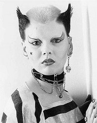

Ray Stevenson
From The Giant: The Definitive Obey Giant Site
Photographer and author, Ray Stevenson captured some of the most significant, enduring images of the early UK punk scene.
His life's timeline in his own words:
1966 While working in professional darkrooms for eccentric Russian / Australian, Roman Kochalski, I hear a song on the radio by Buffy St. Marie that sparks off my vocation. I photographed Buffy at the Marquee where I later met (and unrequitedly loved) Sandy Denny. At Les Cousins Club I photographed Roy Harper, Bert Jansch, Ron Geesin, etc.
1967 I visited the UFO Club by accident one Friday night and felt very comfortable with the 'freaks' there. I grew long hair, smoked marijuana, but didn't find female advocates of 'free-love.' So I took photos instead... Jimi Hendrix, Marc Bolan, David Bowie, Fairport Convention, etc.
1969 I overheard the end of an era, "Take this flower or I'll hit ya!" Later this year I drove my car into a tree and didn't enjoy a couple of months in bed.
1970 Uninspired, disillusioned, my cameras were stolen. Glam-rock had so little 'substance' that I didn't replace my cameras. I preferred to build a 34 foot boat in my parents' back garden, and worked in the BBC photo department. (Now I like Glam Rock.)
1976 My brother Nils sort of co-managed the Sex Pistols. I took pictures first as a favour, then as a pleasure (they had become a great live band!), and finally as an undercover publicist.
1978 Malcolm got money from EMI, Nils and I got the push from Malcolm. I design and published The Sex Pistols Scrapbook. It became The Sex Pistols File after Malcolm tried to sue me for using the colour yellow.
1980 I stayed in bed with a spinal injury (kids today don't know what bad TV really is).
1981 A good osteopath got me walking again so I got up and toured the USA with Siouxsie and the Banshees.
1983 I publish Siouxsie and the Banshees Book.
1984 I begin work on Photo Past.
1986 Sigue Sigue Sputnik (the best live band of the 80's) inspired my third book Regeneration.
1987 I took my last professional photo... Danielle Dax.
1988 Photo Past is finally completed and published.
1990's I spent globe trotting, looking for the perfect place to live, only to discover that it doesn't exist.
1999 Vacant the book by Nils and myself is published. The Vacant Exhibition hung at the K-Bar, Soho, London and then at The National Centre for Pop Music in Sheffield, England. The National Portrait Gallery Faces of the Century show includes a photograph of Johnny Rotten.
2001 Felt like being one of the most pleasant and relaxing years of my life until witnessing the collapse of the Twin Towers from my friends roof on East 11th Street.
2002 My brother Nils dies of a heart attack. I met a girl at his funeral that I was close to loving.
2003 I discovered that the girl was a promiscuous, lying groupie. (It seems I'm not so keen on 'free-love' after all.)
Two notable Stevenson photographs have made it into the Obey pantheon. His 1976 work "Soo Catwoman" became Shepard's 2002 Catwoman Swindle and his work entitled "Johnny Rotten, Dryden Chambers, 1976" became Shepard's 2002 Rotten Poster.
|  |
|
 |
{kind=link}
{kind=link}
{kind=link}
[edit] External Lnks
Stevenson's legendary photographs are available for view and purchase at his website
© Copyright |
|---|
| This page contains an image or images of drawings, paintings, photographs, prints, or other two-dimensional works of art, for which the copyright is presumably owned by either the artist who produced the image, the person who commissioned the work, or the heirs thereof. It is believed that the use of low-resolution images of works of art for critical commentary on the work in question, the artistic genre or technique of the work of art, or the school to which the artist belongs on the English-language website thegiant.org, hosted on servers in the United States, qualifies as fair use under United States copyright law. |